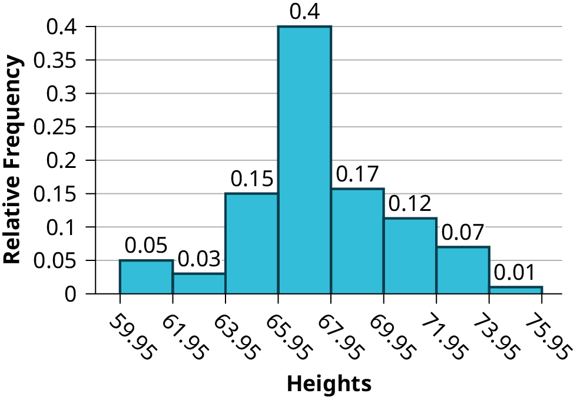
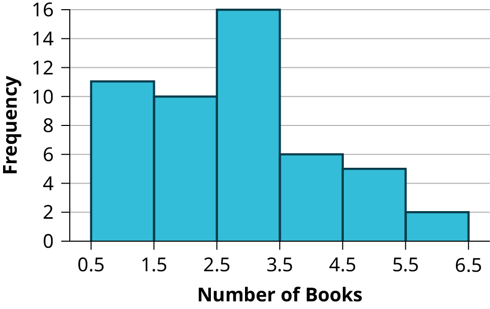
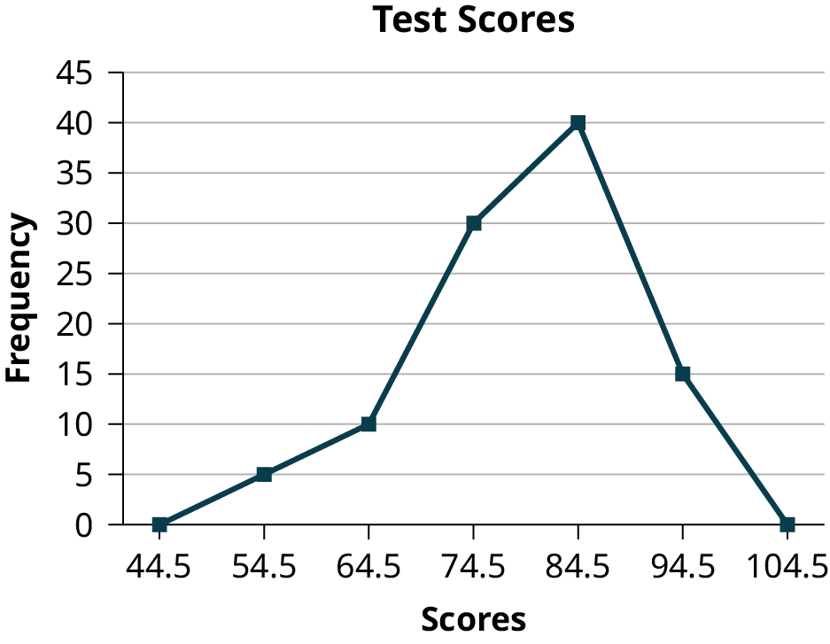
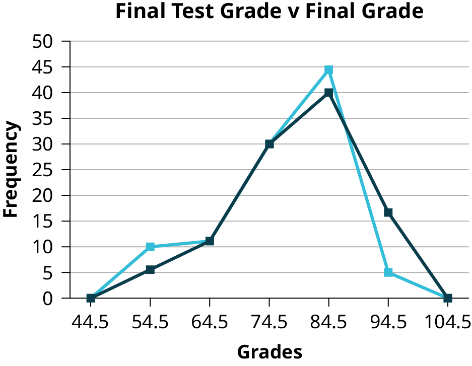
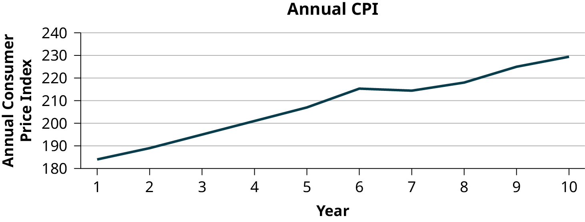

2.2 Histograms, Frequency Polygons, and Time Series Graphs
For most of the work you do in this book, you will use a histogram to display the data. One advantage of a histogram is that it can readily display large data sets. A rule of thumb is to use a histogram when the data set consists of 100 values or more.
A histogram consists of contiguous (adjoining) boxes. It has both a horizontal axis and a vertical axis. The horizontal axis is labeled with what the data represents (for instance, distance from your home to school). The vertical axis is labeled either frequency or relative frequency (or percent frequency or probability). The graph will have the same shape with either label. The histogram (like the stemplot) can give you the shape of the data, the center, and the spread of the data.
The relative frequency is equal to the frequency for an observed value of the data divided by the total number of data values in the sample. (Remember, frequency is defined as the number of times an answer occurs.) If:
f = frequency
n = total number of data values (or the sum of the individual frequencies), and
RF = relative frequency,
then:
For example, if three students in an English class of 40 students received from 90% to 100%, then, f = 3, n = 40, and RF = = = 0.075. 7.5% of the students received 90–100%. 90–100% are quantitative measures.
To construct a histogram, first decide how many bars or intervals, also called classes, represent the data. Many histograms consist of five to 15 bars or classes for clarity. The number of bars needs to be chosen. Choose a starting point for the first interval to be less than the smallest data value. A convenient starting point is a lower value carried out to one more decimal place than the value with the most decimal places. For example, if the value with the most decimal places is 6.1 and this is the smallest value, a convenient starting point is 6.05 (6.1 – 0.05 = 6.05). We say that 6.05 has more precision. If the value with the most decimal places is 2.23 and the lowest value is 1.5, a convenient starting point is 1.495 (1.5 – 0.005 = 1.495). If the value with the most decimal places is 3.234 and the lowest value is 1.0, a convenient starting point is 0.9995 (1.0 – 0.0005 = 0.9995). If all the data happen to be integers and the smallest value is two, then a convenient starting point is 1.5 (2 – 0.5 = 1.5). Also, when the starting point and other boundaries are carried to one additional decimal place, no data value will fall on a boundary. The next two examples go into detail about how to construct a histogram using continuous data and how to create a histogram using discrete data.
The following data are the heights (in inches to the nearest half inch) of 100 semiprofessional soccer players. The heights are continuous data, since height is measured.
60; 60.5; 61; 61; 61.5
63.5; 63.5; 63.5
64; 64; 64; 64; 64; 64; 64; 64.5; 64.5; 64.5; 64.5; 64.5; 64.5; 64.5; 64.5
66; 66; 66; 66; 66; 66; 66; 66; 66; 66; 66.5; 66.5; 66.5; 66.5; 66.5; 66.5; 66.5; 66.5; 66.5; 66.5; 66.5; 67; 67; 67; 67; 67; 67; 67; 67; 67; 67; 67; 67; 67.5; 67.5; 67.5; 67.5; 67.5; 67.5; 67.5
68; 68; 69; 69; 69; 69; 69; 69; 69; 69; 69; 69; 69.5; 69.5; 69.5; 69.5; 69.5
70; 70; 70; 70; 70; 70; 70.5; 70.5; 70.5; 71; 71; 71
72; 72; 72; 72.5; 72.5; 73; 73.5
74
The smallest data value is 60. Since the data with the most decimal places has one decimal (for instance, 61.5), we want our starting point to have two decimal places. Since the numbers 0.5, 0.05, 0.005, etc. are convenient numbers, use 0.05 and subtract it from 60, the smallest value, for the convenient starting point.
60 – 0.05 = 59.95 which is more precise than, say, 61.5 by one decimal place. The starting point is, then, 59.95.
The largest value is 74, so 74 + 0.05 = 74.05 is the ending value.
Next, calculate the width of each bar or class interval. To calculate this width, subtract the starting point from the ending value and divide by the number of bars (you must choose the number of bars you desire). Suppose you choose eight bars.
NOTE
We will round up to two and make each bar or class interval two units wide. Rounding up to two is one way to prevent a value from falling on a boundary. Rounding to the next number is often necessary even if it goes against the standard rules of rounding. For this example, using 1.76 as the width would also work. A guideline that is followed by some for the number of bars or class intervals is to take the square root of the number of data values and then round to the nearest whole number, if necessary. For example, if there are 150 values of data, take the square root of 150 and round to 12 bars or intervals.
The boundaries are:
59.95
59.95 + 2 = 61.95
61.95 + 2 = 63.95
63.95 + 2 = 65.95
65.95 + 2 = 67.95
67.95 + 2 = 69.95
69.95 + 2 = 71.95
71.95 + 2 = 73.95
73.95 + 2 = 75.95
The heights 60 through 61.5 inches are in the interval 59.95–61.95. The heights that are 63.5 are in the interval 61.95–63.95. The heights that are 64 through 64.5 are in the interval 63.95–65.95. The heights 66 through 67.5 are in the interval 65.95–67.95. The heights 68 through 69.5 are in the interval 67.95–69.95. The heights 70 through 71 are in the interval 69.95–71.95. The heights 72 through 73.5 are in the interval 71.95–73.95. The height 74 is in the interval 73.95–75.95.
The following histogram displays the heights on the x-axis and relative frequency on the y-axis.

Try It
The following data are the shoe sizes of 50 students. The sizes are discrete data since shoe size is measured in whole and half units only. Construct a histogram and calculate the width of each bar or class interval. Suppose you choose six bars.
9; 9; 9.5; 9.5; 10; 10; 10; 10; 10; 10; 10.5; 10.5; 10.5; 10.5; 10.5; 10.5; 10.5; 10.5
11; 11; 11; 11; 11; 11; 11; 11; 11; 11; 11; 11; 11; 11.5; 11.5; 11.5; 11.5; 11.5; 11.5; 11.5
12; 12; 12; 12; 12; 12; 12; 12.5; 12.5; 12.5; 12.5; 14
Create a histogram for the following data: the number of books bought by 50 part-time college students at ABC College. The number of books is discrete data, since books are counted.
1; 1; 1; 1; 1; 1; 1; 1; 1; 1; 1
2; 2; 2; 2; 2; 2; 2; 2; 2; 2
3; 3; 3; 3; 3; 3; 3; 3; 3; 3; 3; 3; 3; 3; 3; 3
4; 4; 4; 4; 4; 4
5; 5; 5; 5; 5
6; 6
Eleven students buy one book. Ten students buy two books. Sixteen students buy three books. Six students buy four books. Five students buy five books. Two students buy six books.
Because the data are integers, subtract 0.5 from 1, the smallest data value and add 0.5 to 6, the largest data value. Then the starting point is 0.5 and the ending value is 6.5.
Next, calculate the width of each bar or class interval. If the data are discrete and there are not too many different values, a width that places the data values in the middle of the bar or class interval is the most convenient. Since the data consist of the numbers 1, 2, 3, 4, 5, 6, and the starting point is 0.5, a width of one places the 1 in the middle of the interval from 0.5 to 1.5, the 2 in the middle of the interval from 1.5 to 2.5, the 3 in the middle of the interval from 2.5 to 3.5, the 4 in the middle of the interval from _______ to _______, the 5 in the middle of the interval from _______ to _______, and the _______ in the middle of the interval from _______ to _______ .
3.5 to 4.5
4.5 to 5.5
6
5.5 to 6.5
Calculate the number of bars as follows:
where 1 is the width of a bar. Therefore, bars = 6.
The following histogram displays the number of books on the x-axis and the frequency on the y-axis.

Go to another section. There are calculator instructions for entering data and for creating a customized histogram. Create the histogram for the example.
Press Y=. Press CLEAR to delete any equations.
Press STAT 1:EDIT. If L1 has data in it, arrow up into the name L1, press CLEAR and then arrow down. If necessary, do the same for L2.
Fill in the blanks for the following sentence. Since the data consist of the numbers 1, 2, 3, and the starting point is 0.5, a width of one places the 1 in the middle of the interval 0.5 to _____, the 2 in the middle of the interval from _____ to _____, and the 3 in the middle of the interval from _____ to _____.
Using this data set, construct a histogram.
Number of Hours My Classmates Spent Playing Video Games on Weekends
9.95
10
2.25
16.75
0
19.5
22.5
7.5
15
12.75
5.5
11
10
20.75
17.5
23
21.9
24
23.75
18
20
15
22.9
18.8
20.5
Some values in this data set fall on boundaries for the class intervals. A value is counted in a class interval if it falls on the left boundary, but not if it falls on the right boundary. Different researchers may set up histograms for the same data in different ways. There is more than one correct way to set up a histogram.
Try It
The following data represent the number of employees at various restaurants in New York City. Using this data, create a histogram.
22
35
15
26
40
28
18
20
25
34
39
42
24
22
19
27
22
34
40
20
38
and 28
Use 10–19 as the first interval.
Count the money (bills and change) in your pocket or purse. Your instructor will record the amounts. As a class, construct a histogram displaying the data. Discuss how many intervals you think is appropriate. You may want to experiment with the number of intervals.
Frequency Polygons
Frequency polygons are analogous to line graphs, and just as line graphs make continuous data visually easy to interpret, so too do frequency polygons.
To construct a frequency polygon, first examine the data and decide on the number of intervals, or class intervals, to use on the x-axis and y-axis. After choosing the appropriate ranges, begin plotting the data points. After all the points are plotted, draw line segments to connect them.
A frequency polygon was constructed from the frequency table below.
Frequency Distribution for Calculus Final Test Scores
Lower Bound
Upper Bound
Frequency
Cumulative Frequency
49.5
59.5
5
5
59.5
69.5
10
15
69.5
79.5
30
45
79.5
89.5
40
85
89.5
99.5
15
100

The first label on the x-axis is 44.5. This represents an interval extending from 39.5 to 49.5. Since the lowest test score is 54.5, this interval is used only to allow the graph to touch the x-axis. The point labeled 54.5 represents the next interval, or the first “real” interval from the table, and contains five scores. This reasoning is followed for each of the remaining intervals with the point 104.5 representing the interval from 99.5 to 109.5. Again, this interval contains no data and is only used so that the graph will touch the x-axis. Looking at the graph, we say that this distribution is skewed because one side of the graph does not mirror the other side.
Try It
Construct a frequency polygon of U.S. Presidents’ ages at inauguration shown in the table.
Age at Inauguration
Frequency
41.5–46.5
4
46.5–51.5
11
51.5–56.5
14
56.5–61.5
9
61.5–66.5
4
66.5–71.5
2
Frequency polygons are useful for comparing distributions. This is achieved by overlaying the frequency polygons drawn for different data sets.
We will construct an overlay frequency polygon comparing the scores from the example with the students’ final numeric grade.
Frequency Distribution for Calculus Final Test Scores
Lower Bound
Upper Bound
Frequency
Cumulative Frequency
49.5
59.5
5
5
59.5
69.5
10
15
69.5
79.5
30
45
79.5
89.5
40
85
89.5
99.5
15
100
Frequency Distribution for Calculus Final Grades
Lower Bound
Upper Bound
Frequency
Cumulative Frequency
49.5
59.5
10
10
59.5
69.5
10
20
69.5
79.5
30
50
79.5
89.5
45
95
89.5
99.5
5
100

Try It
We will construct an overlay frequency polygon comparing the scores from the example with the students’ final test scores in algebra.
Frequency Distribution for Algebra Final Test Scores
Lower Bound
Upper Bound
Frequency
Cumulative Frequency
49.5
59.5
10
10
59.5
69.5
5
15
69.5
79.5
40
55
79.5
89.5
35
90
89.5
99.5
10
100
Calculus Test Scores v Algebra Test Scores
Image Insert
Constructing a Time Series Graph
Suppose that we want to study the temperature range of a region for an entire month. Every day at noon we note the temperature and write this down in a log. A variety of statistical studies could be done with this data. We could find the mean or the median temperature for the month. We could construct a histogram displaying the number of days that temperatures reach a certain range of values. However, all of these methods ignore a portion of the data that we have collected.
One feature of the data that we may want to consider is that of time. Since each date is paired with the temperature reading for the day, we don‘t have to think of the data as being random. We can instead use the times given to impose a chronological order on the data. A graph that recognizes this ordering and displays the changing temperature as the month progresses is called a time series graph.
To construct a time series graph, we must look at both pieces of our paired data set. We start with a standard Cartesian coordinate system. The horizontal axis is used to plot the date or time increments, and the vertical axis is used to plot the values of the variable that we are measuring. By doing this, we make each point on the graph correspond to a date and a measured quantity. The points on the graph are typically connected by straight lines in the order in which they occur.
The following data shows the Annual Consumer Price Index, each month, for ten years. Construct a time series graph for the Annual Consumer Price Index data only.
Year
Jan
Feb
Mar
Apr
May
Jun
Jul
1
181.7
183.1
184.2
183.8
183.5
183.7
183.9
2
185.2
186.2
187.4
188.0
189.1
189.7
189.4
3
190.7
191.8
193.3
194.6
194.4
194.5
195.4
4
198.3
198.7
199.8
201.5
202.5
202.9
203.5
5
202.416
203.499
205.352
206.686
207.949
208.352
208.299
6
211.080
211.693
213.528
214.823
216.632
218.815
219.964
7
211.143
212.193
212.709
213.240
213.856
215.693
215.351
8
216.687
216.741
217.631
218.009
218.178
217.965
218.011
9
220.223
221.309
223.467
224.906
225.964
225.722
225.922
10
226.665
227.663
229.392
230.085
229.815
229.478
229.104
Year
Aug
Sep
Oct
Nov
Dec
Annual
1
184.6
185.2
185.0
184.5
184.3
184.0
2
189.5
189.9
190.9
191.0
190.3
188.9
3
196.4
198.8
199.2
197.6
196.8
195.3
4
203.9
202.9
201.8
201.5
201.8
201.6
5
207.917
208.490
208.936
210.177
210.036
207.342
6
219.086
218.783
216.573
212.425
210.228
215.303
7
215.834
215.969
216.177
216.330
215.949
214.537
8
218.312
218.439
218.711
218.803
219.179
218.056
9
226.545
226.889
226.421
226.230
225.672
224.939
10
230.379
231.407
231.317
230.221
229.601
229.594

Try It
The following table is a portion of a data set from www.worldbank.org. Use the table to construct a time series graph for CO2 emissions for the United States.
CO2 Emissions
Year
Ukraine
United Kingdom
United States
1
352,259
540,640
5,681,664
2
343,121
540,409
5,790,761
3
339,029
541,990
5,826,394
4
327,797
542,045
5,737,615
5
328,357
528,631
5,828,697
6
323,657
522,247
5,656,839
7
272,176
474,579
5,299,563
Uses of a Time Series Graph
Time series graphs are important tools in various applications of statistics. When recording values of the same variable over an extended period of time, sometimes it is difficult to discern any trend or pattern. However, once the same data points are displayed graphically, some features jump out. Time series graphs make trends easy to spot.
How NOT to Lie with Statistics
It is important to remember that the very reason we develop a variety of methods to present data is to develop insights into the subject of what the observations represent. We want to get a "sense" of the data. Are the observations all very much alike or are they spread across a wide range of values, are they bunched at one end of the spectrum or are they distributed evenly and so on. We are trying to get a visual picture of the numerical data. Shortly we will develop formal mathematical measures of the data, but our visual graphical presentation can say much. It can, unfortunately, also say much that is distracting, confusing and simply wrong in terms of the impression the visual leaves. Many years ago Darrell Huff wrote the book How to Lie with Statistics. It has been through 25 plus printings and sold more than one and one-half million copies. His perspective was a harsh one and used many actual examples that were designed to mislead. He wanted to make people aware of such deception, but perhaps more importantly to educate so that others do not make the same errors inadvertently.
Again, the goal is to enlighten with visuals that tell the story of the data. Pie charts have a number of common problems when used to convey the message of the data. Too many pieces of the pie overwhelm the reader. More than perhaps five or six categories ought to give an idea of the relative importance of each piece. This is after all the goal of a pie chart, what subset matters most relative to the others. If there are more components than this then perhaps an alternative approach would be better or perhaps some can be consolidated into an "other" category. Pie charts cannot show changes over time, although we see this attempted all too often. In federal, state, and city finance documents pie charts are often presented to show the components of revenue available to the governing body for appropriation: income tax, sales tax motor vehicle taxes and so on. In and of itself this is interesting information and can be nicely done with a pie chart. The error occurs when two years are set side-by-side. Because the total revenues change year to year, but the size of the pie is fixed, no real information is provided and the relative size of each piece of the pie cannot be meaningfully compared.
Histograms can be very helpful in understanding the data. Properly presented, they can be a quick visual way to present probabilities of different categories by the simple visual of comparing relative areas in each category. Here the error, purposeful or not, is to vary the width of the categories. This of course makes comparison to the other categories impossible. It does embellish the importance of the category with the expanded width because it has a greater area, inappropriately, and thus visually "says" that that category has a higher probability of occurrence.
Time series graphs perhaps are the most abused. A plot of some variable across time should never be presented on axes that change part way across the page either in the vertical or horizontal dimension. Perhaps the time frame is changed from years to months. Perhaps this is to save space or because monthly data was not available for early years. In either case this confounds the presentation and destroys any value of the graph. If this is not done to purposefully confuse the reader, then it certainly is either lazy or sloppy work.
Changing the units of measurement of the axis can smooth out a drop or accentuate one. If you want to show large changes, then measure the variable in small units, penny rather than thousands of dollars. And of course to continue the fraud, be sure that the axis does not begin at zero, zero. If it begins at zero, zero, then it becomes apparent that the axis has been manipulated.
Perhaps you have a client that is concerned with the volatility of the portfolio you manage. An easy way to present the data is to use long time periods on the time series graph. Use months or better, quarters rather than daily or weekly data. If that doesn't get the volatility down then spread the time axis relative to the rate of return or portfolio valuation axis. If you want to show "quick" dramatic growth, then shrink the time axis. Any positive growth will show visually "high" growth rates. Do note that if the growth is negative then this trick will show the portfolio is collapsing at a dramatic rate.
Again, the goal of descriptive statistics is to convey meaningful visuals that tell the story of the data. Purposeful manipulation is fraud and unethical at the worst, but even at its best, making these type of errors will lead to confusion on the part of the analysis.
References
Data on annual homicides in Detroit, 1961–73, from Gunst & Mason’s book ‘Regression Analysis and its Application’, Marcel Dekker
“Timeline: Guide to the U.S. Presidents: Information on every president’s birthplace, political party, term of office, and more.” Scholastic, 2013. Available online at http://www.scholastic.com/teachers/article/timeline-guide-us-presidents (accessed April 3, 2013).
“Presidents.” Fact Monster. Pearson Education, 2007. Available online at http://www.factmonster.com/ipka/A0194030.html (accessed April 3, 2013).
“Food Security Statistics.” Food and Agriculture Organization of the United Nations. Available online at http://www.fao.org/economic/ess/ess-fs/en/ (accessed April 3, 2013).
“Consumer Price Index.” United States Department of Labor: Bureau of Labor Statistics. Available online at http://data.bls.gov/pdq/SurveyOutputServlet (accessed April 3, 2013).
“CO2 emissions (kt).” The World Bank, 2013. Available online at http://databank.worldbank.org/data/home.aspx (accessed April 3, 2013).
“Births Time Series Data.” General Register Office For Scotland, 2013. Available online at http://www.gro-scotland.gov.uk/statistics/theme/vital-events/births/time-series.html (accessed April 3, 2013).
“Demographics: Children under the age of 5 years underweight.” Indexmundi. Available online at http://www.indexmundi.com/g/r.aspx?t=50&v=2224&aml=en (accessed April 3, 2013).
Gunst, Richard, Robert Mason. Regression Analysis and Its Application: A Data-Oriented Approach. CRC Press: 1980.
“Overweight and Obesity: Adult Obesity Facts.” Centers for Disease Control and Prevention. Available online at http://www.cdc.gov/obesity/data/adult.html (accessed September 13, 2013).
Chapter Review
A histogram is a graphic version of a frequency distribution. The graph consists of bars of equal width drawn adjacent to each other. The horizontal scale represents classes of quantitative data values and the vertical scale represents frequencies. The heights of the bars correspond to frequency values. Histograms are typically used for large, continuous, quantitative data sets. A frequency polygon can also be used when graphing large data sets with data points that repeat. The data usually goes on y-axis with the frequency being graphed on the x-axis. Time series graphs can be helpful when looking at large amounts of data for one variable over a period of time.
Sixty-five randomly selected car salespersons were asked the number of cars they generally sell in one week. Fourteen people answered that they generally sell three cars; nineteen generally sell four cars; twelve generally sell five cars; nine generally sell six cars; eleven generally sell seven cars. Complete the table.
Data Value (# cars)
Frequency
Relative Frequency
Cumulative Relative Frequency
What does the frequency column in the table sum to? Why?
65
What does the relative frequency column in the table sum to? Why?
What is the difference between relative frequency and frequency for each data value in the table?
The relative frequency shows the proportion of data points that have each value. The frequency tells the number of data points that have each value.
What is the difference between cumulative relative frequency and relative frequency for each data value?
To construct the histogram for the data in the table, determine appropriate minimum and maximum x and y values and the scaling. Sketch the histogram. Label the horizontal and vertical axes with words. Include numerical scaling.
Answers will vary. One possible histogram is shown:
Construct a frequency polygon for the following:
Pulse Rates for Females
Frequency
60–69
12
70–79
14
80–89
11
90–99
1
100–109
1
110–119
0
120–129
1
Actual Speed in a 30 MPH Zone
Frequency
42–45
25
46–49
14
50–53
7
54–57
3
58–61
1
Tar (mg) in Nonfiltered Cigarettes
Frequency
10–13
1
14–17
0
18–21
15
22–25
7
26–29
2
Construct a frequency polygon from the frequency distribution for the 50 highest ranked countries for depth of hunger.
Depth of Hunger
Frequency
230–259
21
260–289
13
290–319
5
320–349
7
350–379
1
380–409
1
410–439
1
Find the midpoint for each class. These will be graphed on the x-axis. The frequency values will be graphed on the y-axis values.
Use the two frequency tables to compare the life expectancy of males and females from 20 randomly selected countries. Include an overlayed frequency polygon and discuss the shapes of the distributions, the center, the spread, and any outliers. What can we conclude about the life expectancy of females compared to males?
Life Expectancy at Birth – Females
Frequency
49–55
3
56–62
3
63–69
1
70–76
3
77–83
8
84–90
2
Life Expectancy at Birth – Males
Frequency
49–55
3
56–62
3
63–69
1
70–76
1
77–83
7
84–90
5
Construct a times series graph for (a) the number of male births, (b) the number of female births, and (c) the total number of births.
Sex/Year
1855
1856
1857
1858
1859
1860
1861
Female
45,545
49,582
50,257
50,324
51,915
51,220
52,403
Male
47,804
52,239
53,158
53,694
54,628
54,409
54,606
Total
93,349
101,821
103,415
104,018
106,543
105,629
107,009
Sex/Year
1862
1863
1864
1865
1866
1867
1868
1869
Female
51,812
53,115
54,959
54,850
55,307
55,527
56,292
55,033
Male
55,257
56,226
57,374
58,220
58,360
58,517
59,222
58,321
Total
107,069
109,341
112,333
113,070
113,667
114,044
115,514
113,354
Sex/Year
1870
1871
1872
1873
1874
1875
Female
56,431
56,099
57,472
58,233
60,109
60,146
Male
58,959
60,029
61,293
61,467
63,602
63,432
Total
115,390
116,128
118,765
119,700
123,711
123,578
The following data sets list full time police per 100,000 citizens along with homicides per 100,000 citizens for a city during the period from 1961 to 1973.
Year
1961
1962
1963
1964
1965
1966
1967
Police
260.35
269.8
272.04
272.96
272.51
261.34
268.89
Homicides
8.6
8.9
8.52
8.89
13.07
14.57
21.36
Year
1968
1969
1970
1971
1972
1973
Police
295.99
319.87
341.43
356.59
376.69
390.19
Homicides
28.03
31.49
37.39
46.26
47.24
52.33
Construct a double time series graph using a common x-axis for both sets of data.
Which variable increased the fastest? Explain.
Did the city's increase in police officers have an impact on the murder rate? Explain.
Homework
Suppose that three book publishers were interested in the number of fiction paperbacks adult consumers purchase per month. Each publisher conducted a survey. In the survey, adult consumers were asked the number of fiction paperbacks they had purchased the previous month. The results are as follows:
Publisher A
# of books
Freq.
Rel. Freq.
0
10
1
12
2
16
3
12
4
8
5
6
6
2
8
2
Publisher B
# of books
Freq.
Rel. Freq.
0
18
1
24
2
24
3
22
4
15
5
10
7
5
9
1
Publisher C
# of books
Freq.
Rel. Freq.
0–1
20
2–3
35
4–5
12
6–7
2
8–9
1
Find the relative frequencies for each survey. Write them in the charts.
Using either a graphing calculator, computer, or by hand, use the frequency column to construct a histogram for each publisher's survey. For Publishers A and B, make bar widths of one. For Publisher C, make bar widths of two.
In complete sentences, give two reasons why the graphs for Publishers A and B are not identical.
Would you have expected the graph for Publisher C to look like the other two graphs? Why or why not?
Make new histograms for Publisher A and Publisher B. This time, make bar widths of two.
Now, compare the graph for Publisher C to the new graphs for Publishers A and B. Are the graphs more similar or more different? Explain your answer.
Often, cruise ships conduct all on-board transactions, with the exception of gambling, on a cashless basis. At the end of the cruise, guests pay one bill that covers all onboard transactions. Suppose that 60 single travelers and 70 couples were surveyed as to their on-board bills for a seven-day cruise from Los Angeles to the Mexican Riviera. Following is a summary of the bills for each group.
Singles
Amount($)
Frequency
Rel. Frequency
51–100
5
101–150
10
151–200
15
201–250
15
251–300
10
301–350
5
Couples
Amount($)
Frequency
Rel. Frequency
100–150
5
201–250
5
251–300
5
301–350
5
351–400
10
401–450
10
451–500
10
501–550
10
551–600
5
601–650
5
Fill in the relative frequency for each group.
Construct a histogram for the singles group. Scale the x-axis by $50 widths. Use relative frequency on the y-axis.
Construct a histogram for the couples group. Scale the x-axis by $50 widths. Use relative frequency on the y-axis.
Compare the two graphs:
List two similarities between the graphs.
List two differences between the graphs.
Overall, are the graphs more similar or different?
Construct a new graph for the couples by hand. Since each couple is paying for two individuals, instead of scaling the x-axis by $50, scale it by $100. Use relative frequency on the y-axis.
Compare the graph for the singles with the new graph for the couples:
List two similarities between the graphs.
Overall, are the graphs more similar or different?
How did scaling the couples graph differently change the way you compared it to the singles graph?
Based on the graphs, do you think that individuals spend the same amount, more or less, as singles as they do person by person as a couple? Explain why in one or two complete sentences.
Singles
Amount($)
Frequency
Relative Frequency
51–100
5
0.08
101–150
10
0.17
151–200
15
0.25
201–250
15
0.25
251–300
10
0.17
301–350
5
0.08
Couples
Amount($)
Frequency
Relative Frequency
100–150
5
0.07
201–250
5
0.07
251–300
5
0.07
301–350
5
0.07
351–400
10
0.14
401–450
10
0.14
451–500
10
0.14
501–550
10
0.14
551–600
5
0.07
601–650
5
0.07
See the table and the table.
In the following histogram data values that fall on the right boundary are counted in the class interval, while values that fall on the left boundary are not counted (with the exception of the first interval where both boundary values are included).
In the following histogram, the data values that fall on the right boundary are counted in the class interval, while values that fall on the left boundary are not counted (with the exception of the first interval where values on both boundaries are included).
Compare the two graphs:
Answers may vary. Possible answers include:
Both graphs have a single peak.
Both graphs use class intervals with width equal to $50.
Answers may vary. Possible answers include:
The couples graph has a class interval with no values.
It takes almost twice as many class intervals to display the data for couples.
Answers may vary. Possible answers include: The graphs are more similar than different because the overall patterns for the graphs are the same.
Answers may vary.
Compare the graph for the Singles with the new graph for the Couples:
Both graphs have a single peak.
Both graphs display 6 class intervals.
Both graphs show the same general pattern.
Answers may vary. Possible answers include: Although the width of the class intervals for couples is double that of the class intervals for singles, the graphs are more similar than they are different.
Answers may vary. Possible answers include: You are able to compare the graphs interval by interval. It is easier to compare the overall patterns with the new scale on the Couples graph. Because a couple represents two individuals, the new scale leads to a more accurate comparison.
Answers may vary. Possible answers include: Based on the histograms, it seems that spending does not vary much from singles to individuals who are part of a couple. The overall patterns are the same. The range of spending for couples is approximately double the range for individuals.
Twenty-five randomly selected students were asked the number of movies they watched the previous week. The results are as follows.
# of movies
Frequency
Relative Frequency
Cumulative Relative Frequency
0
5
1
9
2
6
3
4
4
1
Construct a histogram of the data.
Complete the columns of the chart.
Use the following information to answer the next two exercises: Suppose 111 people who shopped in a special T-shirt store were asked the number of T-shirts they own costing more than $19 each.
The percentage of people who own at most three T-shirts costing more than $19 each is approximately:
21
59
41
Cannot be determined
c
If the data were collected by asking the first 111 people who entered the store, then the type of sampling is:
cluster
simple random
stratified
convenience
Following are the rates of unmarried adults for the 50 U.S. states and Washington, DC.
State
Percent (%)
State
Percent (%)
State
Percent (%)
Alabama
32.2
Kentucky
31.3
North Dakota
27.2
Alaska
24.5
Louisiana
31.0
Ohio
29.2
Arizona
24.3
Maine
26.8
Oklahoma
30.4
Arkansas
30.1
Maryland
27.1
Oregon
26.8
California
24.0
Massachusetts
23.0
Pennsylvania
28.6
Colorado
21.0
Michigan
30.9
Rhode Island
25.5
Connecticut
22.5
Minnesota
24.8
South Carolina
31.5
Delaware
28.0
Mississippi
34.0
South Dakota
27.3
Washington, DC
22.2
Missouri
30.5
Tennessee
30.8
Florida
26.6
Montana
23.0
Texas
31.0
Georgia
29.6
Nebraska
26.9
Utah
22.5
Hawaii
22.7
Nevada
22.4
Vermont
23.2
Idaho
26.5
New Hampshire
25.0
Virginia
26.0
Illinois
28.2
New Jersey
23.8
Washington
25.5
Indiana
29.6
New Mexico
25.1
West Virginia
32.5
Iowa
28.4
New York
23.9
Wisconsin
26.3
Kansas
29.4
North Carolina
27.8
Wyoming
25.1
Construct a bar graph of the unmarried adult rates of your state and the four states closest to your state. Hint: Label the x-axis with the states.
Answers will vary.
Key terms
Frequency the number of times a value of the data occurs
Histogram a graphical representation in x-y form of the distribution of data in a data set; x represents the data and y represents the frequency, or relative frequency. The graph consists of contiguous rectangles.
Relative Frequency the ratio of the number of times a value of the data occurs in the set of all outcomes to the number of all outcomes


![This is a line graph that shows births in Scotland and is compiled from the data provided in tables 2.49, 2.50, and 2.51. The horizontal axis shows Years in intervals of 1 from 1855 to 1875. The vertical axis shows number of births in intervals of 5,000 from 40,000 to 130,000. A series of connected line segments show the numbers of female births over the period, increasing form 45,545 in 1855 to 60,146 in 1875. A second series of connected line segments show the numbers of male births over the period, increasing form 47,804 in 1855 to 63,432 in 1875. A third series of connected line segments show the total births over the period, increasing from 93,349 in 1855 to 123,578 in 1875.](CNX_Stats_C02_M05a_028anno.png)